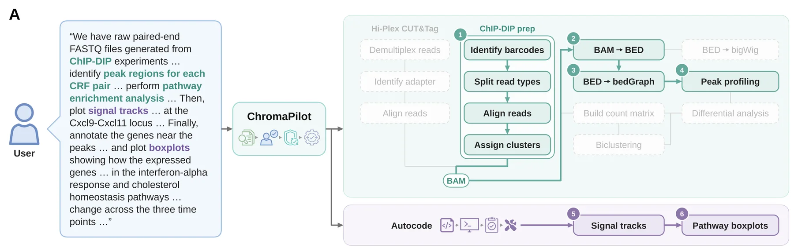
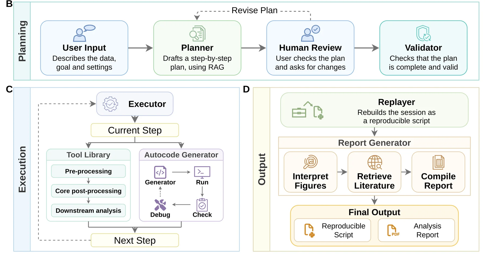
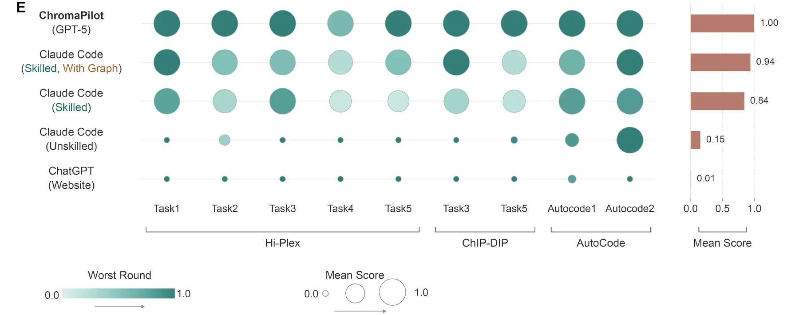
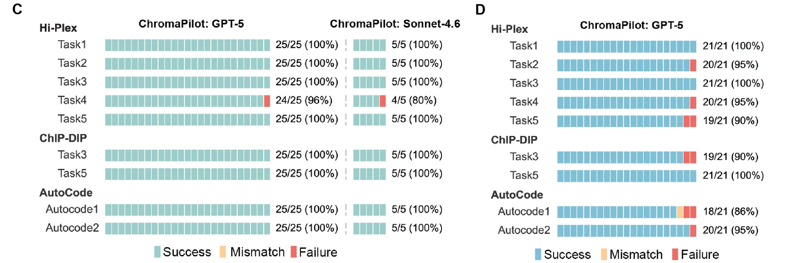

ChromaPilot
A Domain-Guided Multi-Agent Framework for Reproducible Multimodal Epigenomic Analysis
New assays such as Hi-Plex CUT&Tag and ChIP-DIP map many chromatin regulators at once, but their data need assay-specific processing that general-purpose AI agents struggle with: their code can run, yet the result does not match an expert analysis. ChromaPilot encodes the expert knowledge as validated tools plus a graph of which tool feeds which, and lets a language model only plan and connect them, writing new code only on top of validated outputs and saving every run as a replayable script. On nine benchmark tasks it matched expert analyses (1.00 on a 0–1 scale), while Claude Code and ChatGPT on their own scored 0.15 and 0.01, and Claude Code given ChromaPilot's tools and graph reached 0.94.
The problem
New multiplexed chromatin assays measure many regulators of the genome in a single experiment, but turning their reads into results takes assay-specific expertise. Histone modifications, chromatin-modifying enzymes and transcription factors (together, chromatin regulatory factors) act in combination to control which genes are used. Hi-Plex CUT&Tag gives each DNA fragment the barcodes of the two factors found on it, covering more than 600 factor pairs; ChIP-DIP maps more than 160 DNA-associated proteins in parallel.
Each assay has its own rules. In Hi-Plex CUT&Tag, for example, a fragment barcoded A–B and one barcoded B–A record the same pair and must be counted together. Both assays end in the same kind of aligned-read file, but their preprocessing cannot be swapped, and the right downstream analysis changes with the question.
Large language model (LLM) agents, which write and run analysis code from plain-language requests, look like a natural fit. But for a specialized assay, code that runs is not the same as a correct analysis: an agent can execute a script without error and return a plausible-looking file while having chosen the wrong preprocessing step, parameter or data format. None of the agent systems the study surveyed natively supported either assay.
The key idea
ChromaPilot puts the expert knowledge into validated tools and a dependency graph, and lets the LLM only orchestrate them. The tools carry the assay knowledge: decoding barcodes, aligning reads, building signal tracks and count matrices, and running clustering, differential analysis, peak calling and annotation. The dependency graph records which outputs are valid inputs to which tools; peak calling, for instance, takes a signal track built from reads that the assay's own decoding step has sorted by target. The agents read the request, choose a path through this graph and pass each output to the next step.
When a request goes beyond the library, an Autocode module writes new code, but on top of validated intermediate files, so the model never has to reinvent barcode decoding. Every finished run is saved as a replayable script that reruns the whole analysis without calling the LLM.
The figure shows a real request. In plain language, it asked for acetylation peaks, pathway enrichment, signal tracks at the Cxcl9–Cxcl11 chemokine locus and gene-expression plots. ChromaPilot ran four curated tools and wrote code only for the two custom plots.

How it works
A set of specialized agents carries each request from plan to record, and nothing runs until the plan has been approved and checked.
- Plan. A Planner drafts a step-by-step plan from the tool specifications and the dependency graph, retrieving documentation when it needs context. The user reviews the plan, and a Validator checks that it is complete and executable.
- Execute. An Executor runs each step with a curated tool, or hands it to Autocode, which writes code, runs it, checks the result and corrects it, asking the user for help if it keeps failing.
- Record. A Replayer turns the session into the replay script, and a Report Generator assembles figures, interpretations and retrieved literature into a report.

Domain knowledge, not coding skill, makes the difference
On their own, general-purpose agents rarely reproduced the expert analyses, and giving one of them ChromaPilot's tools and graph closed most of the gap. The study built nine benchmark tasks with expert reference answers: seven standardized tasks (five steps of a Hi-Plex CUT&Tag pipeline, from raw reads to differential peaks, and two ChIP-DIP tasks) plus two that require new code. Each output was scored from 0 to 1 for agreement with the reference.
Averaged over the nine tasks, ChromaPilot scored 1.00. Claude Code, a general-purpose coding agent, scored 0.15 on its own, and ChatGPT, prompted through its web interface, scored 0.01. Claude Code often wrote code, but on five of the seven assay-specific tasks every run scored zero; its only high task score came on a generic plotting task, drawing genome-browser tracks. ChatGPT scored zero on all seven. AutoBA, a published bioinformatics agent, failed across the specialized tasks.
The stepwise comparison shows where the gain comes from. Giving the same Claude Code ChromaPilot's tools raised its score to 0.84, and adding the dependency graph raised it to 0.94, especially on the Hi-Plex tasks. The coding agent did not change; only the curated domain knowledge available to it did. ChromaPilot, which also plans against full per-tool specifications and validates each plan before running it, remained the most reliable overall.

Reliable across repeats, users and assays
ChromaPilot's results were repeatable: runs almost always finished, and on the standardized tasks every finished run matched the expert reference. With GPT-5 as the LLM, each of the seven standardized tasks was run 25 times; 96–100% of runs finished, and all of those matched the reference exactly. Switching to Claude Sonnet 4.6, the same model the Claude Code runs used, gave similar results. When seven biologists wrote their own prompts after a brief introduction to each goal, success stayed at 90–100%.

Three applications, each started from a plain-language request, show the range of analyses it supports:
- Hi-Plex CUT&Tag (human K562 cells): from raw reads to joint clustering and annotation of factor-pair profiles, identifying combinatorial chromatin states with curated tools alone.
- ChIP-DIP (mouse dendritic cells, a type of immune cell, after stimulation with the bacterial molecule LPS): peaks, pathway enrichment and two custom plots, which showed increased acetylation at the chemokine locus after stimulation.
- ENCODE ChIP-seq: ten histone marks compared jointly between two cell lines with differential principal component analysis, reusing the same downstream tools on conventional data.
Why it matters
For specialized assays, a script that runs is not evidence of a correct analysis. ChromaPilot shows a practical alternative: encode validated expert steps as tools, record how they connect, and let the LLM orchestrate rather than improvise. In the benchmark this gave results that matched expert analyses, and every run leaves a script that reproduces it. New assays could be shared the same way, with their tools and graph, while existing downstream modules are reused and Autocode covers one-off requests.
The evidence has limits. The benchmark covers a defined task suite built around two multiplexed assays and a small set of datasets and models; agreement with a reference measures faithful execution, not whether every analysis choice is biologically right; and adding an assay still requires expert implementation and testing. Generated reports also need expert review.